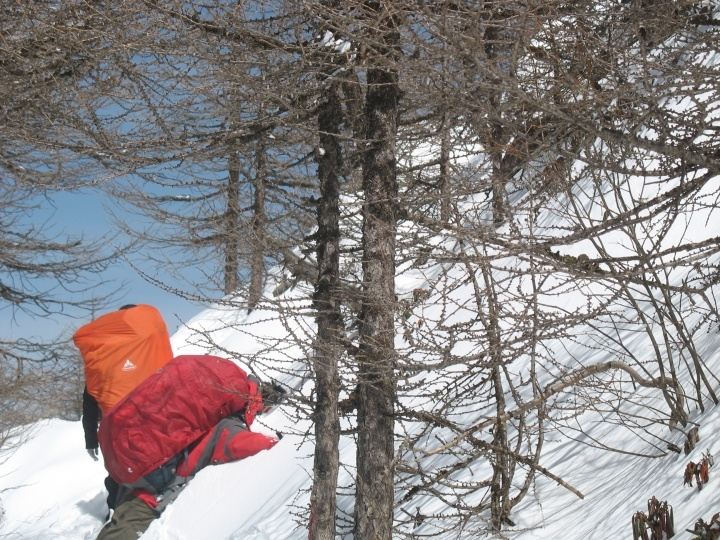

发信人: xusong (神雕大侠), 信区: outdoor
标 题: Too White——秦岭太白山行记
发信站: 饮水思源 (2011年05月07日00:01:21 星期六)
人上了年纪就不大想抒发感情，过当或不足就未免显得浅薄而尴尬；再就是东西见多了，
刺激也就相对小了，不足以积蓄成文；再就是刺激经历的多了，神经倾向于松弛，疲惫的
感觉往往占了上风。于是想了半晌，还是算了。但太白的两天还是值得记下来，因为以下
即将展现的原因。
出发前一周一直在调整作息，但七天里还是有五天失眠，凌晨4点后才睡着。再加上火车票
是站票，本来产生了放弃的念头，但既然票都买了，不想随意就怂了；且这个五一注定想
要作为一些事情的转折点，所以阵痛少不了，干脆就登山吧；甚至假设那时就知道了会遇
到暴风雪，我想仍是会去吧——以往的登山活动也不都是轻轻松松，甚至还有相当的难度
——但无论如何最后都能过得来。那时也在网上搜了一些游记，有暴风雪的，有山难的；
于是也确实把死在山上的可能作为考虑的一部分，但终究还是侥幸心理占了上风。
今年五一赶上西安的世园会，园艺博览，后来知道这使得西安成了旅游热点。去的列车是
T字头，不算很快，人特别多，几乎无立锥之地；又受了某列车员的诓骗，从原本的三号车
厢挤到六号车厢，只觉得越来越挤，后来财哥，zzmax被冲散，只有我和icer在过道里找了
地方站。人折腾着无所谓，只是心疼背包。汗流成了狗，脾气也不好，差点儿跟一对非主
流男女发生冲突。收到几条短信也不想回。六号车厢的列车员也比较崩溃，没见过这么多
人的架势。
screen.width - 200){this.width = screen.width - 200}">
过了第一站稍稍好些，把lsf惠赠的蛋疼老虎凳掏出来坐着。老虎凳产生蛋疼还是菊疼的效
应取决于臀部和凳子重合的角度，我采取了周期转角的策略来分摊疼痛；再到后来发现了
一个最佳的单侧偏痛角度，竟然坐着还能挺十几分钟；再后来把带着的小薄书垫着坐，竟
然还能半小时无压力，也竟就此安坐了好几个时段。盐分和水分丧失不少，也省去了上厕
所的闹心。后来掏出康师傅红烧辣肉面本帮烧，味道好的令男人沉默女人泪下。一路上还
有幸听icer就各类古旧往事发表评论，止不住喟然长叹若有所思，一并与后半夜半昏半醒
不表。
第二天，也就是30号，当时怎么也没想到还有下车的一天。于是见到了挫字辈大湿兄hyp。
一年没见了，hyp还是原来样子；只不过一年之间持续听着一哥各种唠叨在北京初见hyp时
的惊艳和哭天抢地的念叨他的好，这时候又更亲切了一些。想到原来老要跟老胡讨教编码
竞赛的事情，也还有一些单方面忧郁吐槽，咋就没意识到巨蟹座老大哥温柔细心善解人意
的心哪！哎，打住，再说就蛋疼菊花痒了。
早上8点到的西安，10点三刻到的周至，下午差不多两点到厚畛子换车，三点到的都督门（
海拔1689m）。中间icer一直跟某黑色桑塔纳司机李勇扯淡。扯得正high，李勇司机接了个
电话说是山体滑坡要绕道，果断把价格提高到700块钱，貌似被黑了。三点到了立马出发（
若不是经小面包车司机提醒，一上来入口都找不到啊）。icer贯彻了急性子作风，一上来
把我们往前面猛赶。我刚起步10分钟左右就过了极限点，之后一下午轻松。事实证明icer
把自己整萎了，拖到队伍最后。秦岭本来是有大熊猫的，一只没见到。山路虽然野，还是
比较明显，过了几次小溪大石头，基本还是密林间的土路，与安徽浙江的野山没有太大区
别。
screen.width - 200){this.width = screen.width - 200}">
路上我和hyp走在前面，他告诉了我一点等高线图的读法，还举了个显著的例子，虽然后来
我们觉得这个例子搞错了。第一天本来打算在老庙子（海拔3035m）扎营，但是时间和睡眠
都不给力，晚上七点左右进到了大坪（海拔2467m）找了个小平台安顿。期间体力剩最多的
hyp和zzmax轻装取水，我和财哥icer扛着五个人的包返回大坪。沉死了，唉。当晚由于ic
er的扎营地面不好只能睡他一人，hyp就跟我们三个人挤一个T3，基情不表。晚饭不表。我
带上来的三斤白酒被要求扔掉一半，郁闷。那晚上没睡好，前几天系统院请的郝院士讲的
一个词“输运过程”一直在脑子里绕来绕去，好像在漆黑的帐篷里我无法完成我所在位置
的某种输运通道就不能安心休息。nnd什么狗屁想法我现在都没整明白。或者还是想念自己
的帐篷了吧。最终约摸睡着了一个小时。
第三天是最艰难的上升，需要完成登顶拔仙台（海拔3767m）并在大爷海（海拔3614m）扎
淫。前一天晚上下了小冰雹子，那时不会想到整个第三天都会笼罩在这雹子的阴霾下。上
午的路尚可，绿色的植被渐渐少了，深秋积淀的黄慢慢占了上风。间或也有一阵阵的冰雹
子夹着雨，我们在速干外面套上冲锋衣就能应付。一路上几处的水潭全结了厚冰，我们站
在上面照了些照片，但后来看来这些五月的厚冰都是不足为奇的。
screen.width - 200){this.width = screen.width - 200}">
到了老庙子（海拔3035m）那儿，风大的不得了，人们纷纷冷成狗了，还照了张合照，补充
了水源，烧了点儿热水。
screen.width - 200){this.width = screen.width - 200}">
水很容易就沸腾了，那里的沸点大概八十多度吧。那个时候刚刚好过3000的海拔，我和财
哥都感觉有些吃亏了；zzmax小伙子正值青春年少也就算了；icer和hyp俩老妖精竟也生猛
鲜活，让人不能原谅。再往上走就是将军庙（海拔3293m），一路无话，只觉得那盐津葡萄
怎么能那么给力啊！我一路吃了些抗高反的药，猛磕了好多运动饮料，人们纷纷劝阻，说
是心脏受不了，还可能抽筋。不过我还是都喝完了- -。又上升了几百米，到了将军庙，出
现了岔路：一边是石海，一边是被一路上冰雹子盖上了一层雪的下降路线。hyp和icer研究
了半天地图，觉得这里正好该下降了，于是往下走。下走的路上恰好又有垃圾，让人信心
足了些，但那路真不像是有人走过的，枝丫太多。我们下降了50多米吧，却听见背后有人
在喊叫。我那时候以为是听见前面的声音，摸不着头脑。hyp就先上去打探情况，原来是另
一个小队伍的人在喊我们。他们请的向导告诉我们，我们路走错了，应该从石海走。
screen.width - 200){this.width = screen.width - 200}">
只是那时候石海的路迹都被雪封上了，不好辨认。后怕啊！不带向导危险有木有！！我们
只得返回那儿重新从石海出发。在我们前面也曾有一个西安邮电的4人小队，之后再也没见
过，想必是走了那个错路。也还好这个五一来太白的队伍算是不少，甚至我们第四天下撤
的时候见到一个百人大队进行强度更大的“鳌太”穿越，是全国各地的救援队来西安集训
。那4个人应该是没事儿的。过了将军庙的石海，往莲花石（海拔3369m）的路上，空气渐
渐稀薄，雾也大起来，下冰雹子的密度越来越大，能见度估计小于40米。路倒是不难认，
路边是一队队的玛尼堆。

藏族人把石头作为神圣的东西，堆成某种形状代表某种含义吧。这一段路程被称为万仙阵
（海拔3553m），名字的由来就在于此：玛尼堆的石阵。一路走过，荒凉的地面上渐渐黄色
的枯草也少了，都是白雪覆盖，偶尔有黑色的泥巴。这个时候，40里跑马梁其实已经开始
了。路两边都非常宽敞，中间一条土路，指向天际，望不到劲头，环境是风雪雾交加。
screen.width - 200){this.width = screen.width - 200}">
想必这是一条山脊上的线路。如果不是因为雾太大，那么两边陡然深入千米下降的山脊线
叠加上远处又耸起最后二者交织形成的连绵错综的庞大而齐整的山峦队列，一定是摄人心
魄的美！西当太白有鸟道，俺容易吗我！！就为了看这在于险远的非常之观，结果能见度
只有40米，有木有！！！。。到了雷公庙的时候，风已经大的不能忍，停包修整都不能大
于两分钟，站久了就冻僵。但我刚好觉得背负有问题需要调整，手早没感觉了，用牙齿摘
了劳工手套哆哆嗦嗦的调了近十分钟，另外四人早崩溃了在一旁风中凌乱，大声吼着让我
快点儿，最后受不了一个个先后上路了，留下hyp等我。这一段上了路财哥就慢慢不行了，
嘴唇发紫呼吸困难；我刚好调了背包感觉不错，于是帐篷就我来背。接下去半小时要死了
有木有啊！！呼气呼不进去就得吐出来，有个东西顶着肺似的，我后来才想起来某个闷热
的暑假半夜里犯了哮喘的时候有过这个感受。又记起来垂直极限里面那帮人得肺水肿的感
觉，看看自己咳出来粉红色的血没有。
screen.width - 200){this.width = screen.width - 200}">
icer之前说没出汗是因为蒸汽都进肺里了，我擦泪。那时候还觉得困啊，那个困；跑马梁
上雾太大，大概能见度只有20多米了吧，漫天漫地都是白色的，风吹得细冰雹往脸上砸，
面部偏瘫啊，眼镜也厚了一倍，是一层冰。正好也没睡好，意识模糊，大概我有2/3的时间
眼睛是闭着的吧，然后1/3的时间睁着，看一眼路面再看一眼前面的人是不是还在视野里隔
了多远，马上又闭上。还好hyp一直在我后面押队啊我擦，老哥有你在我他妈没那么容易死
！那里正好不时又有石头路，需要一个个跳跃和稳定来完成，那风那雹子我擦嘞，稳定个
屁啊！！我都不知道是怎么过来的，还没摔几次，鞋好啊有木有！！大二买的迪卡侬高帮
低端登山鞋！！！当然还是有漏水，脚也没感觉了早就。路上还有往反方向走的队伍，一
哥们儿路过我的时候提醒说手指和脚趾要多活动不然会冻坏，我刚准备说谢谢一口雹子就
进气管了我擦！结果是面部狰狞的瞪了那哥一眼！！骚瑞啊！！！哎他妹的最困难的时候
都不想走了眼睛完全闭上了准备一个侧躺然后瘫在那儿等死，结果脑子里突然出现了去清
凉的某2b哥在那儿破着嗓子操笑的景象，巨宽的大脸上反射着金黄的光照瞎了我的狗眼，
还他妹的乐呵着呢！！不行啊不能死，死了我的帐篷还在丫那儿呢！！！果断强打起精神
顶着风骂了一句粗口，然后又果断把帐篷扔给hyp，慢慢调整呼吸又走了起来。迫于这种鸟
天气的鸭梨，我们决定放弃冲顶拔仙台（海拔3767m），直接去大爷海（3614m）扎营。反
正能见度低，在顶峰也看不到啥风景——虽然明眼人一看就能看出我们找这种理由双眼噙
满泪水的无奈！加紧往大爷海，hyp激励我们说到大爷海就好了，只有俩小时路程了！！这
尼玛是激励吗！！！半死人状态到了大爷海，全身都湿透着哆嗦，牙齿不由自主颤抖，不
能说话。更来不及拍照，便抓紧搞帐篷扎地钉系防风绳，在网上偷了一张图，差不多是这
个情形，不过能见度要低多了：
screen.width - 200){this.width = screen.width - 200}">
好不容易把帐篷搞起来，我和财哥俩废人马上冲进去缩在睡袋里试图恢复体温。icer也在
另一个帐篷里缩了半小时才发出一声声音证明活着。hyp和zzm俩人脚捂在一个睡袋里更苦
。我那袋姜糖果断不够啊，想起自己半个月前在寝室里没事儿消灭了一包，真tmd蛋都碎了
。好一会儿才恢复过来，差点儿睡着了；不能啊，这睡了就醒不过来了怕是。那大爷海还
有提供住宿餐饮服务的，也顶着风雪来收营地费，fxck啊。第三天就这么地了吧，晚上又
只睡着1个半小时。
第四天早上一醒过来，这外帐拉链真没白坏，我们的包全完了！
screen.width - 200){this.width = screen.width - 200}">
外面也积了起码两尺厚的大雪，一脚下去膝盖没了。长江中下游地区长大的孩子表示木有
见过这么大的雪（除了那年雪灾）有木有！四个人不愿意出去打水于是用剩下的水和一些
雪弄了些热水喝。帐外能见度在20米以下吧，icer甚至爆出了下撤不能的结论。还有有几
队人有向导，我们就赶紧收了东西跟着他们走，其实还是拖到了九点多才出发。财哥的一
对登山杖埋在了雪里没时间找，杯具。刚起身的一段还是在山脊上，这十几分钟的路程比
前一天还要难。风雾冰雹又同时来了，能见度降到10米以下，呼吸完全不能，眼睛也没法
睁开，我看见财哥被吹翻栽在了厚雪里。
screen.width - 200){this.width = screen.width - 200}">
不过挺过了这一段就好多了，我还在积蓄死到临头的情绪结果到了山的背面，风没了，太
阳居然慢慢的出了来。这时候大家看到北坡的美景，心情大好，也就想起了照相。
screen.width - 200){this.width = screen.width - 200}">
中间除了雪太厚，抬放脚比较费力；和太阳将雪化成冰，有些滑；和偶尔路过山口有些冰
雹风之外，都没什么难度了，心情大好。秦岭雄壮的美这时候才出来了啊，俊俏的山脊和
雄浑的山体，平行整齐的雪线。
screen.width - 200){this.width = screen.width - 200}">
screen.width - 200){this.width = screen.width - 200}">
screen.width - 200){this.width = screen.width - 200}">
虽然我的装备虽然不算太好，但都很给力哈哈哈。。一路上遇到反穿的鳌太穿越队，是犀
利的救援队。他们还带了一只小黑狗上来，虎得不得了。路上的白雪堆得太厚，眼睛长期
盯着，不大能适应，除了戴着墨镜夹的hyp外纷纷有些雪盲。财哥最严重，眼睛都烧红了，
那天晚上后半夜听说疼的没能睡着。我们其他人脸部都被灼伤了，是太阳紫外线反射到雪
上然后照到脸上。我到现在脸上还是疼，皮子掉了一地，没灼伤的地方也都是红黑色的烤
野猪颜色。我和财哥分了三人帐，我仍旧萎靡，还是没睡好和轻微哮喘吧；财哥却一路暴
走，把我们四个人甩在后面呼喊不到。
screen.width - 200){this.width = screen.width - 200}">
之后我们超越了好几拨来太白的户外团队，陆续到了文公庙，小文公庙，上板寺和下板寺
，不表。我在文公庙那儿把“文公庙”几个字看成了“女公厕”，搞的很不好意思。其实
主要是财哥从里面荡笑着走出来引起了误解。

screen.width - 200){this.width = screen.width - 200}">
俺的包，谢谢侬：
screen.width - 200){this.width = screen.width - 200}">
之后的下撤颇为欢乐，且看我身后倒下的这位大婶：
 screen.width - 200){this.width = screen.width - 200}">
第四天中饭：
screen.width - 200){this.width = screen.width - 200}">
还有我的破罐子破摔滑雪一屁股流（是从牯牛降练出来的，当时杨振晔前辈滑泥咱比不过
，清洁无暇的雪滑滑还是行的）。到了下板寺，icer冒天下之大不韪提出了坐索道下去，
众人纷纷作为难状接受了这个提议；间或zzmax小伙子正义地提出了这过于腐败的说法，被
众人暴打之后拖上了索道，至今面部伤残不能示人：
screen.width - 200){this.width = screen.width - 200}">
下山后，一群人等车去汤峪，扯淡中
screen.width - 200){this.width = screen.width - 200}">
这里有个插曲，向导一会儿说在一个平台的下面坐车一会儿又说在上面，导致我们上下爬
了N级石阶，累的要趴下，icer抓着hyp的包怨念的说：老子在太白上没事儿，却死这儿了
！回汤峪后直接回西安，在书院青旅安顿买火车票与当地混混差点儿干上不表。
之后一天在西安各种吃喝玩乐不提。晚上九点火车，仍然是站票，但人少了不少，大家还
能睡着几觉。我觉得还是我睡的最好，因为我一共睡着了十几觉吧。回来后直到现在深呼
吸还是不大行，肺部神经末梢估计还在痉挛。
这次前前后后多亏了hyp。有老胡在，咱有信心一个不落下回来。随机过程这挫课别给我挂
了！！
screen.width - 200){this.width = screen.width - 200}">
--
对于世界，理性地理解，感性地表达。
※ 来源:·饮水思源 bbs.sjtu.edu.cn·[FROM: 211.80.58.70]
※ 修改:·xusong 于 2011年05月07日09:41:07 修改本文·[FROM: 202.120.38.162]
※ 修改:·yanhao 于 2011年05月08日13:00:06 修改本文·[FROM: 202.120.46.4]
|